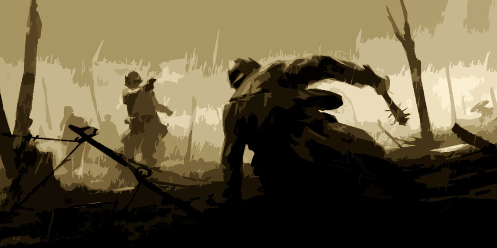

The Founding
Orion Fairbourne arrived on the northern coast of the Reach in 1142, roughly 784 years before the present day of 1926. Sent by a river-city state in the Cradle to establish a trading post, he proved an unusual colonial administrator: meticulous, curious about local cultures, and committed to the belief that a settlement's legitimacy came from its inhabitants' consent rather than its sponsor's authority. He was also notably confident in his own judgment. At the mouth of the river that still runs through Vallam, Orion negotiated with the local inhabitants rather than displacing them, incorporated their leadership structures into his administration, and drafted a founding charter still studied in Fairbourne's universities. The charter established that the state exists to serve its people. Leadership is a responsibility, not a right. Authority lasts only as long as its holder deserves it.
The trading post grew into a town, then a city, and eventually the capital of an expanding territory.
Over the following three centuries, that territory became the most powerful nation on the Reach and ultimately the most powerful single nation on Morphe. Orion died in his eighties while still working.
His descendants inherited both his position and, with remarkable consistency, his temperament and political convictions. Across seven centuries, the Fairbourne dynasty has produced an almost unbroken succession of intelligent, measured rulers committed to the principle that their authority depends on their worthiness to wield it. Whether through improbable chance or deliberate institutional cultivation, the result has been a dynasty that is not universally loved, but whose rulers are difficult to dismiss or challenge on principle.
The Parliament and the Crown
Fairbourne's political system resembles Great Britain's, with an elected Parliament responsible for legislation and a Crown holding executive authority. The monarch ordinarily governs through Parliament, but retains the power to act directly. Unlike a conventional constitutional monarchy, the Crown's reserved authority faces few practical limits: by tradition, Parliament defers when the monarch intervenes. Seven centuries of effective rule have cultivated greater trust in the dynasty's judgment than resentment of its power. This arrangement remains contentious. In 1926, a significant parliamentary reform movement argues that the Crown's unchecked authority is a structural weakness.
Although generations of capable monarchs have made it a strength, the system has no reliable safeguards against an incompetent or unfit successor.
King Gabriel Fairbourne IV, aged fifty-three, has ruled for eighteen years. He is widely respected for his leadership during the early years of the Great War and his refusal to pursue the total-conquest strategy central to Renascia's ambitions. His public trust remains unusually high for a monarch in wartime. His son and heir, Crown Prince Caelum Fairbourne, is twenty-seven and markedly different from his father. Whether he will develop into a similarly capable ruler remains uncertain, and factions within Parliament and the military have quietly considered the implications of his eventual succession for years.
The Dominion and Its Reach
At its height, the Fairbourne Dominion held formal dominion over most of Morphe's civilized world.
It expanded through naval superiority, economic leverage, occasional military conquest, and the appeal of its political model compared to the failing autocracies that ruled much of the world. Most nations entered the Dominion as vassal states, retaining their internal governments and cultural autonomy in exchange for trade agreements, military protection, and adoption of Fairbourne's legal framework for foreign affairs and commerce.
The arrangement was neither benevolent nor equitable. Trade terms favored Fairbourne, while military protection provided justification for maintaining troops and bases within vassal territories. Fairbourne presented vassalage as a path toward eventual full partnership, a promise many Dominion citizens sincerely believed. However, vassals increasingly resented a system in which equal standing always seemed one generation away, regardless of how many generations passed.
By 1926, the Dominion's global reach has largely collapsed. Although Fairbourne still claims suzerainty over its vassal network and exercises substantial authority over neighboring territories, the Great War and preceding political fractures have severely weakened its ability to project power abroad. Fairbourne remains the most powerful single nation on Morphe, but it can no longer maintain control over everything it once held. Its government must now choose which territories, alliances, and interests it can afford to protect.
The Great War (1903–Present)

It began with fire. In 1903, when Renascia, formally a Fairbourne vassal and nominally Classical Astralist, launched a southern campaign across Corda. For thirty years, the Lys Monarchy had prepared to challenge the Dominion, viewing Fairbourne as both the primary obstacle to Renascia's rise and a major source of Morphe's political dysfunction. Its strategy relied on the belief that Fairbourne's global authority was weaker than it appeared. A correct assessment, though Renascia underestimated the resistance it would face.
Renascia's initial campaign employed scorched-earth tactics, chemical warfare, aerial bombardment from early military aircraft, and systematic destruction of civilian infrastructure. These methods marked a significant escalation beyond previous conflicts. Fairbourne condemned them as atrocities;
Renascia's military doctrine justified them as efficient, and the Lys Monarchy as necessary. Renascia's territorial gains accelerated. In 1910, it controlled the northern third of Corda, and half the continent by 1915. By 1920, The Lys Empire incorporated numerous formerly independent nations through conquest, political destabilization followed by the installation of loyal governments, and treaties that secured Renascian objectives at the signatories' expense. By 1926, the Renascian Empire of the Lys is Morphe's second most powerful political entity, behind Fairbourne.
Since approximately 1922, the war has stalled along the Deadlock, a contested frontier across southern Corda. Fairbourne cannot advance without overextending supply lines already strained by unrest among its western vassals. Renascia cannot push farther west without exposing its rear to the unconquered nations of eastern Corda, which accept Fairbourne's military support and continue to resist absorption. Both sides hold their positions, conduct limited offensives, and probe for weaknesses, waiting for an opportunity to break the stalemate.
By 1926, the Great War permeates daily life in Vallam. Newspapers report on the fighting, memorial plaques mark losses, and returning soldiers bear its lasting physical and psychological effects. Recruiting posters compete with growing casualty lists, while public confidence in the war's outcome remains uncertain. The central question is whether Fairbourne is winning, or merely delaying defeat.
Cerani and Răvin
The État Impérial de Cerani occupies the warm, wine-producing peninsulas and mountain valleys of the Reach's southeastern coast, south of Fairbourne's heartland, surrounding a large inland sea.
Known for its cultural confidence, old aristocratic families, and magnificent cities, Cerani has long resisted the idea that it is subordinate to Fairbourne. Although formally a vassal for two centuries, its nobility views the arrangement as a temporary partnership with a northern power whose commercial advantages happen to exceed its own. By 1926, Cerani is approaching a political crisis. The Great War has exposed Fairbourne's inability to enforce its authority in Cerani while committed to the Corda front and the Deadlock. Over the past decade, the Imperial faction, composed of nobles and military officers who believe Cerani should become an independent great power, has steadily gained influence.
Empress Regent Isolde Varen-Caux remains formally loyal to Fairbourne's framework but has gradually expanded Cerani's independence through tariff renegotiations, bilateral agreements with non-Fairbourne nations, and investment in its own military capabilities. Each measure is defensible in isolation, but together they indicate a clear shift in policy. Fairbourne's ambassador reports on these developments with increasing concern. The Imperial faction is also predominantly Classical Astralist, placing it at odds with the Reformist Astralist framework underpinning Fairbourne's diplomatic institutions. Cerani's principal strategic ambition is the Cradle, specifically the southern sea lanes along its northern coast. Control of these routes would free Cerani's merchant fleet from dependence on the northern passages managed by Fairbourne. Both governments continue to treat this ambition as a legitimate economic interest rather than a prelude to formal separation, and neither can maintain that position indefinitely.
Where Cerani's ambitions are aristocratic and directed outward, the Republic of Răvin faces an internal ideological struggle. Located in the Reach's southwestern interior, Răvin is characterized by long winters, dense forests, and extensive iron mining. Its political history alternates between reformist democracy and strongman rule. Răvin entered Fairbourne's vassal network through a treaty following a period of domestic collapse. Its terms have remained politically contentious ever since, with opposition emerging in every subsequent decade. Răvin's current crisis centers on the Răvin Workers' Congress, originally a legitimate trade union federation that has evolved over fifteen years into a parallel governing power across several industrial cities. The Congress publicly advocates wage reform, mine safety regulations, and electoral reforms to expand the franchise. Beneath these demands, however, lie more radical ideological currents. Some factions maintain contact with foreign powers interested in destabilizing Răvin, and Fairbourne's intelligence services suspect that Renascia is among them.
Răvin's elected Parliament is aware of the Congress's growing power and its foreign connections.
However, a decade of wartime economic strain has eroded the Parliament's legitimacy, making direct confrontation risky. A crackdown could strengthen the Congress enough to overthrow the government. The Parliament therefore delays decisive action while attempting to maintain its position against factions that might replace it if it acts too aggressively in either direction. Fairbourne's position is equally difficult. Its vassal agreement legally obliges it to support Răvin's legitimate government, but it remains unclear whether that means the elected Parliament, the increasingly powerful Workers' Congress, or a future political arrangement that has yet to emerge. Fairbourne's Foreign Office is working to avoid making that determination prematurely.
In the shadow of this unending conflict, Fairbourne’s capital remains a beacon of both pride and despair. Its streets thrum with the rhythm of industry, the air thick with the smog of progress and the lights of revelry. Veterans, broken and haunted, return from the front lines, passing fresh-faced recruits marching onto boats toward the same horrors. Amid this mix of patriotic fervor, mundane day to day living, and quiet dread, the story begins in this capital, known as–